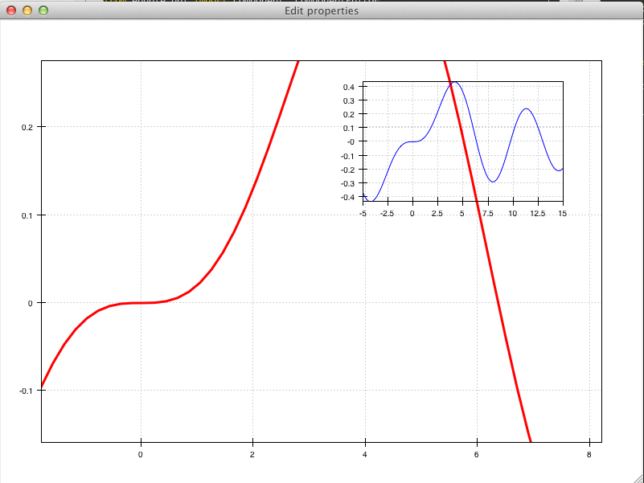

Containers and Layout¶
Chaco containers¶
It is quite common to need to display multiple data side by side. In order to arrange plots and other components (e.g., colorbars, legends) in a single panel, Chaco uses containers to organize the layout.
Chaco implements 4 different containers: HPlotContainer and VPlotContainer, GridPlotContainer, and OverlayPlotContainer.
All containers are derived from the base class
BasePlotContainer, and share
a common interface:
__init__(*components, **parameters)(constructor of the container object): The constructor of a plot container takes a sequence of components, which are added to the container itself, and a set of keyword arguments, which are used to initialize the parameters of the container. For example:container = HPlotContainer(scatter_plot, line_plot, spacing=100)
creates a container with horizontal layout containing two plots (
scatter_plotandline_plot), with a spacing of 100 pixels between them.add(*components): Append ore or more plots to the ones already present in the container. For example, this is equivalent to the code above:container = HPlotContainer(spacing=100) container.add(line_plot, scatter_plot)
remove(self, *components): Remove a sequence of components from the containerinsert(index, component): Inserts a component at a specific position in the components list
Note
Each plot can have only one container, so adding the same plot to a second container will remove it from the first one. In the same way, adding the same plot multiple times will not have create multiple copies. Instead, one should create multiple plots objects.
E.g., this code:
1 2 3 4 5 6 7 8 9 10 11 12 | # Create a vertical container containing two horizontal containers
h_container1 = HPlotContainer()
h_container2 = HPlotContainer()
outer_container = VPlotContainer(h_container1, h_container2,
stack_order="top_to_bottom")
# Add the three plots to the first container
h_container1.add(scatter_plot, line_plot1, line_plot2)
# Now add the first line plot to the second container => it is removed
# from the first, as each plot can only have one container
h_container2.add(line_plot1)
|
results in this layout:

HPlotContainer and VPlotContainer¶
HPlotContainer and
VPlotContainer display a set of components
in an horizontal and vertical stack, respectively, as shown in these simple
examples:
{kind=link}

In both cases, a series of line plots and scatter plots is added to an
HPlotContainer or a
VPlotContainer:
1 2 3 4 5 6 7 8 9 10 11 12 13 14 15 16 | # Create the data and the PlotData object
x = linspace(-14, 14, 100)
y = sin(x) * x**3
plotdata = ArrayPlotData(x = x, y = y)
# Create a scatter plot
scatter_plot = Plot(plotdata)
scatter_plot.plot(("x", "y"), type="scatter", color="blue")
# Create a line plot
line_plot = Plot(plotdata)
line_plot.plot(("x", "y"), type="line", color="blue")
# Create a horizontal container and put the two plots inside it
container = HPlotContainer(line_plot, scatter_plot)
self.plot = container
|
HPlotContainer is also used often to
display a colorbar or legend to the side of a plot. For example, this
plot

was created using a color-mapped scatter plot and a colorbar inside a horizontal container:
1 2 3 4 5 6 7 8 9 10 11 12 13 14 15 16 17 18 19 | # Create the plot
plot = Plot(data)
plot.plot(("index", "value", "color"), type="cmap_scatter",
color_mapper=jet)
# Create the colorbar, handing in the appropriate range and colormap
colormap = plot.color_mapper
colorbar = ColorBar(index_mapper=LinearMapper(range=colormap.range),
color_mapper=colormap,
orientation='v',
resizable='v',
width=30,
padding=20)
colorbar.padding_top = plot.padding_top
colorbar.padding_bottom = plot.padding_bottom
# Create a container to position the plot and the colorbar side-by-side
container = HPlotContainer(plot, colorbar)
|
HPlotContainer parameters¶
This is a list of parameters that are specific to
HPlotContainer
stack_order: The order in which components in the plot container are laid out. The default behavior is left-to-right.stack_order = Enum("left_to_right", "right_to_left")
spacing: The amount of space to put between components.spacing = Float(0.0)
valign: The vertical alignment of objects that don’t span the full height.valign = Enum("bottom", "top", "center")
VPlotContainer parameters¶
This is a list of parameters that are specific to
VPlotContainer
stack_order: The order in which components in the plot container are laid out. The default behavior is bottom-to-top.stack_order = Enum("bottom_to_top", "top_to_bottom")
spacing: The amount of space to put between components.:spacing = Float(0.0)
halign: The horizontal alignment of objects that don’t span the full width.:halign = Enum("left", "right", "center")
See also
HPlotContainer and VPlotContainer in action. See demo/financial_plot.py,
demo/two_plots.py, demo/advanced/scalar_image_function_inspector.py,
and demo/basc/cmap_scatter.py
in the Chaco examples directory.
GridPlotContainer¶
Just as the name suggests, a GridPlotContainer
lays out plots in a regular grid.
Unlike the previous containers, one has to specify in advance the number
of rows and columns in the plot. Plots with different sizes and/or
aspect ratios are aligned according to the parameters halign and
valign.
For example, to generate this plot

one needs to create six plots of fixed height and add them successively
(left-to-right, top-to-bottom) to the
GridPlotContainer. Plots are aligned to
the top by setting valign = 'top'.
The complete code looks like this:
1 2 3 4 5 6 7 8 9 10 11 12 13 14 15 16 17 18 19 20 21 22 23 24 25 26 27 28 29 30 31 32 33 34 35 36 37 38 | class GridContainerExample(HasTraits):
plot = Instance(GridPlotContainer)
traits_view = View(
Item('plot', editor=ComponentEditor(), show_label=False),
width=1000, height=600, resizable=True
)
def _plot_default(self):
# Create a GridContainer to hold all of our plots: 2 rows, 3 columns
container = GridPlotContainer(shape=(2,3),
spacing=(10,5),
valign='top',
bgcolor='lightgray')
# Create x data
x = linspace(-5, 15.0, 100)
pd = ArrayPlotData(index = x)
# Plot some Bessel functions and add the plots to our container
for i in range(6):
data_name = 'y{}'.format(i)
pd.set_data(data_name, jn(i,x))
plot = Plot(pd)
plot.plot(('index', data_name),
color=COLOR_PALETTE[i],
line_width=3.0)
# Set each plot's aspect based on its position in the grid
plot.set(height=((i % 3) + 1)*50,
resizable='h')
# Add to the grid container
container.add(plot)
return container
|
GridPlotContainer parameters¶
This is a list of parameters that are specific to
GridPlotContainer
valign: The vertical alignment of objects that don’t span the full height.:valign = Enum("bottom", "top", "center")
halign: The horizontal alignment of objects that don’t span the full width.:halign = Enum("left", "right", "center")
spacing: A tuple or list of(h_spacing, v_spacing), giving spacing values for the horizontal and vertical direction. Default is (0, 0).
See also
GridPlotContainer in action. See demo/basic/grid_container.py
and demo/basic/grid_container_aspect_ratio.py
in the Chaco examples directory.
OverlayPlotContainer¶
Overlay containers OverlayPlotContainer
lay out plots on top of each other.
The chaco.plot.Plot class
in Chaco is a special subclass of
OverlayPlotContainer.
Overlay containers can be used to create “inset” plots. In the following code, for instance, we create a zoomable plot with an fixed inset showing the full data:
1 2 3 4 5 6 7 8 9 10 11 12 13 14 15 16 17 18 19 20 21 22 23 24 25 26 27 28 29 30 31 32 33 34 35 36 37 38 39 | class OverlayContainerExample(HasTraits):
plot = Instance(OverlayPlotContainer)
traits_view = View(
Item('plot', editor=ComponentEditor(), show_label=False),
width=800, height=600, resizable=True
)
def _plot_default(self):
# Create data
x = linspace(-5, 15.0, 100)
y = jn(3, x)
pd = ArrayPlotData(index=x, value=y)
zoomable_plot = Plot(pd)
zoomable_plot.plot(('index', 'value'),
name='external', color='red', line_width=3)
# Attach tools to the plot
zoom = ZoomTool(component=zoomable_plot,
tool_mode="box", always_on=False)
zoomable_plot.overlays.append(zoom)
zoomable_plot.tools.append(PanTool(zoomable_plot))
# Create a second inset plot, not resizable, not zoom-able
inset_plot = Plot(pd)
inset_plot.plot(('index', 'value'), color='blue')
inset_plot.set(resizable = '',
bounds = [250, 150],
position = [450, 350],
border_visible = True
)
# Create a container and add our plots
container = OverlayPlotContainer()
container.add(zoomable_plot)
container.add(inset_plot)
return container
|
The code above generates this plot:
{kind=link}
See also
GridPlotContainer in action. See demo/basic/inset_plot.py
and
demo/advanced/scalar_image_function_inspector.py
in the Chaco examples directory. To learn more about sharing
axes on overlapping plots, see demo/multiaxis.py and
demo/multiaxis_with_Plot.py.
Sizing, rendering, events¶
Containers are responsible for a handling communication with the components it contains, including defining the rendering order, dispatching events, and determining sizes.
Sizing¶
Containers are the elements that set sizes and do layout. Components within containers declare their preferences, which are taken into account by their container to set their final aspect.
The basic traits that control the layout preferences of a component are:
resizable, a string indicating in which directions the component can be resized. Its value is one of''(not resizable),'h'(resizable in the horizontal direction),'v'(resizable in the vertical direction),'hv'(resizable in both, default).aspect_ratio, the ratio of the component’s width to its height. This is used by the component itself to maintain bounds when the bounds are changed independently. Default isNone, meaning that the aspect ratio is not enforced.padding_left,padding_right,padding_top,padding_bottomset the amount of padding space to leave around the component (default is 0). The propertypaddingallows to set all of them as a tuple (left, right, top, bottom).auto_center, controls the behavior when the component’s bounds are set to a value that does not conform its aspect ratio. IfTrue(default), the component centers itself in the free space.fixed_preferred_size: If the component is resizable, this attribute specifies the amount of space that the component would like to get in each dimension, as a tuple (width, height). This attribute can be used to establish relative sizes between resizable components in a container: if one component specifies, say, a fixed preferred width of 50 and another one specifies a fixed preferred width of 100, then the latter component will always be twice as wide as the former.
You can get access to the actual bounds of the component, (including
padding and border) using the
outer properties:
outer_position, the x,y point of the lower left corner of the padding outer box around the component. Useset_outer_position()to change these values.outer_bounds, the number of horizontal and vertical pixels in the padding outer box. Useset_outer_bounds()to change these values.outer_x,outer_y,outer_x2,outer_y2:, :attr:`outer_width,outer_height: coordinates of lower-left pixel of the box, coordinates of the upper-right pixel of the box, width and height of the outer box in pixels
See also the documentation of the class enable.component.Component
for more details about the internal parameters of Chaco components.
The container can set the attribute fit_components to control if
it should resize itself to fit its components. Allowed values are
'' (do not resize, default), 'h'
(resize in the horizontal direction), 'v' (resize in the
vertical direction), 'hv' (resize in both).
Rendering order¶
Every plot component has several layers:
background: Background image, shading, and bordersunderlay: Axes and gridsimage: A special layer for plots that render as images. This is ina separate layer since these plots must all render before non-image plots.
plot: The main plot areaannotation: Lines and text that are conceptually part of the “plot” but need to be rendered on top of everything else in the plot.overlay: Legends, selection regions, and other tool-drawn visualelements
These are defined by DEFAULT_DRAWING_ORDER,
and stored in the drawing_order trait.
Complexity arises when you have multiple components in a container: How do their layers affect each other? Do you want the “overlay” layer of a component to draw on top of all components? Do you want the “background” elements to be behind everything else?
This is resolved by the unified_draw trait. The container will
draw all layers in succession. If a component sets unified_draw
to False (default), the container will ask it to draw the corresponding
layer as it is reached in the loop. If unified_draw is True,
the whole component will draw in one go when the container reaches
the layer specified in the attribute component.draw_layer,
which by default is ‘plot’.
For example, if you want a plot to act as an overlay, you could set
unified_draw = True and draw_layer = 'overlay'. These values tell the
container to render the component when it gets to the ‘overlay’ layer.
Set overlay_border to True if you want the border to draw as part of
the overlay; otherwise it draws as part of the background. By default,
the border is drawn just inside the plot area; set inset_border to
False to draw it just outside the plot area.
Backbuffer¶
A backbuffer provides the ability to render into an offscreen buffer, which is
blitted on every draw, until it is invalidated. Various traits such as
use_backbuffer and backbuffer_padding control the behavior of
the backbuffer. A backbuffer is used for non-OpenGL backends, such as agg
and on OS X. If use_backbuffer is False, a backbuffer is never used,
even if a backbuffer is referenced by a component.
Dispatching events¶
The logic of event dispatching is defined in the ‘enable’ library, which defines the superclasses for Chaco’s containers and components. In summary, when a component gets an event, it dispatches it to:
its overlays, in reverse order that they were added and are drawn
itself, so that any event handler methods on itself get called
its underlays, in reverse order that they were added and are drawn
its listener tools
On each of these elements, Chaco looks for a method of the form
{component_state}_{event_name}. For example,
in response to the user pressing the left mouse button
on a tool in state normal (the default state, see Stateful tools),
Chaco would look for a method called normal_left_down.
If this exists, the event is
dispatched and the component decides whether to handle the element
and set event.handled = True, in which case the dispatch chain is
interrupted.
Note
If the attribute auto_handle_event of the
component is set to True, calling the event
method automatically sets event.handled = True.
Possible event names are:
|
|
|
|
Most objects default to having just a single event
state, which is the “normal” event state. To make a component that
handled a left-click, you could subclass
PlotComponent, and implement
normal_left_down() or normal_left_up(). The signature for handler
methods is just one parameter, which is an event object that is an instance of
(a subclass of) BasicEvent.
Subclasses of BasicEvent
are MouseEvent, DragEvent,
KeyEvent, and
BlobEvent and BlobFrameEvent
(for multitouch). It’s fairly easy to extend this event
system with new kinds of events and new suffixes (as was done for multitouch).
Events contain a reference to the GUI toolkit window that generated them
as event.window.
A common pattern is for component to call methods on the window
to do things like set a tooltip or create a context menu.
A draw or update of the window does not
actually happen until the next paint().
By that time, the
component no longer has a reference to the event or the event’s window,
but uses instead
its own reference to the window, self.window.
See also the documentation of the enable library, which gives more details about the event dispatching happening at that level.